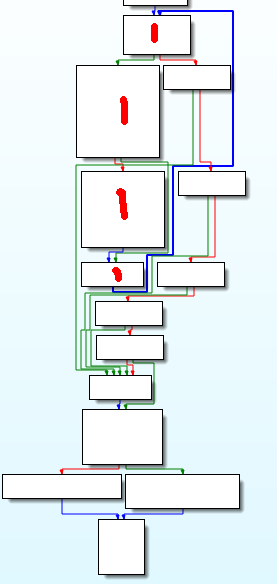

IDF 实验室逆向题部分题解
内容
IDF 实验室逆向题部分题解¶
提示
这是一篇迁移自 Jekyll 的文章，如有格式问题，可到 ⛺SilverRainZ/bullet 反馈
地址在这里：IDF逆向题 这些题都比较水，好在我和它一样水。
Python BtyeCode:¶
好像是用Cpython编译的, 手头没工具, 用的是师兄给的反编译出来的代码:
def encrypt(key, seed, string):
rst = []
for v in string:
rst.append((ord(v) + seed ^ ord(key[seed])) % 255)
seed = (seed + 1) % len(key)
return rst
if __name__ == '__main__':
print "Welcome to idf's python crackme"
flag = input('Enter the Flag: ')
KEY1 = 'Maybe you are good at decryptint Byte Code, have a try!'
KEY2 = [
124, 48, 52, 59, 164, 50, 37, 62, 67, 52, 48, 6, 1,
122, 3, 22, 72, 1, 1, 14, 46, 27, 232]
en_out = encrypt(KEY1, 5, flag)
if KEY2 == en_out:
print 'You Win'
else:
print 'Try Again !'
def encrypt(key, seed, string):
rst = []
for v in string:
rst.append((ord(v) + seed ^ ord(key[seed])) % 255)
seed = (seed + 1) % len(key)
return rst
if __name__ == '__main__':
print "Welcome to idf's python crackme"
flag = input('Enter the Flag: ')
KEY1 = 'Maybe you are good at decryptint Byte Code, have a try!'
KEY2 = [
124, 48, 52, 59, 164, 50, 37, 62, 67, 52, 48, 6, 1,
122, 3, 22, 72, 1, 1, 14, 46, 27, 232]
en_out = encrypt(KEY1, 5, flag)
if KEY2 == en_out:
print 'You Win'
else:
print 'Try Again !'
正常人反着推肯定是写: arr[i] - (key[seed] ^ seed) 不过这样肯定推不出来,
因为出题人写错了… (师兄想出来的… 打死我也不知道是题目错了啊…),
出题的用了正确的算法给出密文之后, 把 rst.append((ord(v) ^ ord(key[seed]) + seed) % 255)
写成了: rst.append((ord(v) + seed ^ ord(key[seed])) % 255)
所以没必要深究什么了,代码:
#include <stdio.h>
#include <stdlib.h>
#include <string.h>
#include <math.h>
int main(){
unsigned char arr[] = {
124, 48, 52, 59, 164, 50, 37,
62, 67, 52, 48, 6, 1, 122, 3,
22, 72, 1, 1, 14, 46, 27, 232, 0};
const char key[] = "Maybe you are good at decryptint Byte Code, have a try!";
char flag[100];
int tmp;
int seed = 5;
for (int i = 0; i < 23; i++){
tmp = (arr[i] ^ key[seed]) - seed;
flag[i] =abs(tmp)%127; //事实上为什么要%127也不太清楚
while (flag[i] < 32 || flag[i] > 127){
if (flag[i] < 32) flag[i] = flag[i] + 255;
if (flag[i] > 127) flag[i] = flag[i] - 255;
}
printf("arr[%d] = %d; key[%d] = %d; ^ = %d flag[%d] = %d;\n",
i,arr[i],seed, key[seed],key[seed]^seed, i, flag[i]);
seed = (seed + 1)%strlen(key);
}
puts(flag);
printf("\n");
system("pause");
return 0;
}
flag: WCTF{ILOVEPYTHONSOMUCH}
简单的ELF逆向:¶
这题是ELFx64位的CrackMe, 只能用IDA啦, 载入之,师兄叫我用F4 F5,不过64位的IDA好像没有F5, 找到main函数, F4, 得到代码:
addr_0x400900_12:
{
v13 = 0;
if (v3 != 22) {
v13 = 1;
}
v14 = 0;
while ((unsigned char)(uint1_t)(v14 <= 16) != 0) {
eax15 = (int32_t)(uint32_t)(unsigned char)v8;
if ((int32_t)*(signed char*)&eax15 != 0) {
v13 = 1;
*(int32_t*)&rsi = 0;
*((int32_t*)&rsi + 1) = 0;
printf("%d", 0);
}
++v14;
}
eax16 = (int32_t)(uint32_t)(unsigned char)v17;
if (*(signed char*)&eax16 != 48
|| ((eax18 = (int32_t)(uint32_t)(unsigned char)v19, *(signed char*)&eax18 != 56)
|| ((eax20 = (int32_t)(uint32_t)(unsigned char)v21, *(signed char*)&eax20 != 50)
|| ((eax22 = (int32_t)(uint32_t)(unsigned char)v23, *(signed char*)&eax22 != 51)
|| (eax24 = (int32_t)(uint32_t)(unsigned char)v25, *(signed char*)&eax24 != 0x7d))))) {
v13 = 1;
}
puts("\r", rsi);
/* v13 应该是一个标志变量 */
if (v13 != 0) {
puts("u r wrong\r\n\r", rsi);
rax26 = main("u r wrong\r\n\r", rsi);
} else {
puts("u r right!\r", rsi);
}
return 0;
addr_0x4008ff_7:
goto addr_0x400900_12;
}
果然代码的可读性不是很好, 前面的printf之类的被我省去了, 重点放在while循环和那个if上,
可以看到if要求的是几个变量必须分别为 0, 8, 2, 3,}
应该就是flag 的后部分了, 从最后的判断right和wrong可以看出v13是判断正确与否的变量.
while 循环实在是难懂, 乖乖回去看汇编好了. 右键选择Graphic View模式, 这样汇编代码显得很清晰, 把重点放在while循环对应的那部分, 简单分析得到, 红笔标注的地方就是程序内为数不多的循环了, 循环之后多条并排的绿线那里是多路if,最后的是正确与否的判断以及输出.
关键代码如下, interator 对应var_14, arr_1 对应var_40, arr_2 对应 var_c0:
loc_40097C:
cmp [rbp+iterator], 10h ; 循环总次数
setle al
test al, al
jnz short loc_40091D
loc_40091D:
mov eax, [rbp+iterator] ; 装入循环变量
cdqe
movzx eax, [rbp+rax+arr_1]
movsx edx, al ; 取出(unsigned char)arr_1[iterator], 数组元素只有一个字节
mov eax, [rbp+iterator]
cdqe
mov eax, [rbp+rax * 4+arr_2] ; 取出(int)arr_2[iterator], 四个字节
sub eax, 1 ; eax = eax - 1
mov ecx, eax ; ecx = eax
shr ecx, 1Fh ; ecx = ecx >> 0x1f
lea eax, [rcx+rax] ; 装入地址其实就是 eax = ecx + eax;
sar eax, 1 ; eax = eax >> 1
cmp edx, eax ; 比较arr_2[iterator]经过运算的值是否等于arr_1[iterator]
jz short loc_400978 ; 等于则跳
loc_400978:
add [rbp+iterator], 1
经过以上分析可以知道 arr_1 应该是我们输入的key, 所以有必要知道arr_2 的值, 跳转到arr_2的定义:
是空的… 但是我们回到代码中, 对arr_2有这样的操作:
刚好17个项(0-10h),
所以说 arr_i[i] = ((arr_2[i] – 1) + (arr_2[i] – 1)>>0x1f)>>1
(忽略了shr 和 sar 以及各种细节问题… 所幸没有出错)
(vim 来处理这些最爽了)
代码:
#include <cstdio>
#include <cstdlib>
#define N 17
int arr_2[N] = {
0x0EF, 0x0C7, 0x0E9, 0x0CD, 0x0F7, 0x8B, 0x0D9,
0x8D, 0x0BF, 0x0D9, 0x0DD, 0x0B1, 0x0BF, 0x87,
0x0D7, 0x0DB, 0x0BF
};
int main(){
for (int i = 0; i < N; i++){
int ch = ((arr_2[i] - 1) + ((arr_2[i] - 1) >> 0x1f))>>1;
/*注意一下 >> 的优先级*/
printf("%c",ch);
}
printf("0823}\n");
system("pause.");
return 0;
}
flag: wctf{ElF_lnX_Ckm_0823}
简单的PE文件逆向:¶
x86平台, 双击没法运行, 应该需要某个古老的C++运行时, 那就放弃用OD了, IDA载入, 稍微翻一翻(其实是不知道如何有效定位), 0x4113a0处就是关键处, F5之, 这次代码好看多了, 可以看出和上一个CrackMe基本相同…
flag = 0;
for ( i = 0; i < 17; ++i ){
if ( v76[i] != byte_415768[*(&v53 + i)] )
flag = 1;
}
if ( v77 != 49 || v78 != 48 || v79 != 50 || v80 != 52 || v81 != 125 )
flag = 1;
v76[v75] = 0;
printf("\r\n");
sub_411136();
if ( flag )
{
printf("u r wrong\r\n\r\n");
sub_411136();
sub_41113B();
}
else
{
printf("u r right!\r\n");
sub_411136();
}
system("pause");
同样是把flag分成两部分, 后面五个必须是1024},前面的在一个for循环里算出:
v76[i] != byte_415768[*(&v53 + i)]
通过一个数组v53[]运算出下标, 再用下标从另一个数组byte_415768[]取出值来, 数组是:
v53 = 1;
v54 = 4;
v55 = 14;
v56 = 10;
v57 = 5;
v58 = 36;
v59 = 23;
v60 = 42;
v61 = 13;
v62 = 19;
v63 = 28;
v64 = 13;
v65 = 27;
v66 = 39;
v67 = 48;
v68 = 41;
v69 = 42;
byte_415768 db 73h
db 'wfxc{gdv}fwfctslydRddoepsckaNDMSRITPNsmr1_=2cdsef66246087138',0
要注意byte_415768[]的一个元素s(73h)没有被识别. 所以:
#include <cstdio>
#include <cstdlib>
int v53[] = {
1, 4, 14, 10, 5, 36, 23, 42, 13,
19, 28, 13, 27, 39, 48, 41, 4
};
char byte_415768[] = "swfxc{gdv}fwfctslydRddoepsckaNDMSRITPNsmr1_=2cdsef66246087138\0";
int main(){
for (int i = 0; i < 17; i++){
printf("%c", byte_415768[v53[i]]);
}
printf("1024}\n");
system("pause");
}
flag: wctf{Pe_cRackme1c1024}
评论
如果你有任何意见，请在此评论。 如果你留下了电子邮箱，我可能会通过 回复你。